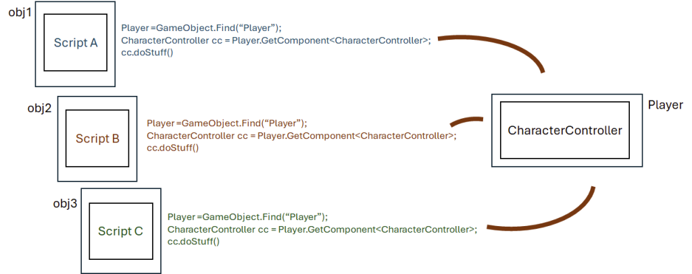

This guide is ever-growing!
There are hundreds of practices, cheats, tips and tricks within Unity - way too many to document in one go! This guide will updated over time, and students are welcome to contribute to it!
Last updated: 13.02.25
Feel like you are familiar with C# scripting and want to take your coding to the next level? This guide is for you! In no particular order, here are some more advanced C# (and general programming) practices you may not have known about!
Did you know: C#
Did you know: you can embed any variable directly into a string, without having to append it?
Append $ to the start of the string, and surround any variables with curly brackets:
C#
string name;
int age;
//Instead of
Debug.Log("Hi " + name + ", you are " + age + " years old!");
//Yuck!
//We can write
Debug.Log($"Hi {name}, you are {age} years old!");
//Wow!
Did you know: you can simplify simply if-else statements?
The Ternary Operator (?) can use a boolean expression to select one of two options:
C#
string rossIsLate;
//Instead of
if(time > 10)
{
rossIsLate = "yes";
}
else
{
rossIsLate = "no";
}
//Yuck!
//We can write
rossIsLate = (time > 10) ? "yes" : "no";
//result = (condition) ? <option if true> : <option if false>;
//Wow!
Did you know: you can simplify null checks with the null-conditional operator (?.)
C#
GameObject enemy;
//Instead of
if(enemy != null)
{
enemy.SpontaneouslyCombust();
}
//Yuck!
//We can write
enemy?.SpontaneouslyCombust();
//Wow!
Did you know: you can set any variable type as nullable with T?
C#
// num can be ...,-2,-1,0,1,2,...
// it can not be null, it is 0 by default.
int num;
//Yuck!
// coolerNum can be ...,-2,-1,0,1,2,...
// but it can also be null (and is null by default)
int? coolerNum;
//Wow!
Programming Design Patterns
Design patterns are common solutions to issues one can face while programming. Like a blueprint, you can think of them as general concepts for solving common challenges. Design patterns are not anything specific in any language, but are more general concepts that are universally understood by programmers. The actual implementation may differ depending on who is programming.
You can learn more about design patterns here: https://refactoring.guru/design-patterns/what-is-pattern
The “Singleton” pattern is one of the most used design patterns out there, and for a good reason! If you have only one instance of a script, it allows you to reference that script from anywhere in the code in just one simple line.
This is particularly useful for game development: think of any time that you had a script such as CharacterMovement.cs, or GameManager.cs, something that you want to reference a lot in other scripts.
Ordinarily, you would need to create a variable to hold a reference to that script, and then either use GetComponent<> or drag the script in manually through the editor. This can get messy really quick.

Every time you want to reference CharacterController (a script on the Player), you have to first get a reference to the Player (expensive) then use GetComponent (expensive). A lot of repeated code, a lot of expensive calls. Good for quick prototypes, not the best idea for full games.
Now imagine if, at any point throughout any script, you could simply write CharacterMovement.instance and have an instance of that script. This is made easy with singletons:
Assuming there is only one instance of CharacterController in any given scene, the singleton pattern exposes a very handy CharacterController.instance variable, allowing you to reference that script in one line, anywhere in your project, without having to create unnecessary variables or run expensive calls.
Learn more about singletons: https://refactoring.guru/design-patterns/singleton
Singletons in Unity
Implementing singletons in Unity is super easy. Create a new script in your project: Singleton.cs
Paste this code:
C#
using UnityEngine;
//Singleton Pattern
public abstract class Singleton<T> : MonoBehaviour where T : MonoBehaviour
//When defining a new singleton, T (or type) can be any other monobehavior
//This helps us seperate one type of singleton from any other
{
//static = the value of the variable is synced between all instances of this script
private static T instance;
//A private variable to hold the instance of the singleton
public static T Instance => instance;
//A public variable which returns the instance
protected void Awake()
//Before OnEnable() and Start() - this will likely be the first code run for any script
{
if (instance == null)
{
instance = this as T;
}
//if no instance has been set yet, set the current instance as "The Instance"
else if (instance != this)
{
Debug.LogWarning("Multiple instances of the singleton type '" + instance.GetType() + "' were found. Deleting this instance");
Destroy(gameObject);
}
//If multiples are detected, delete multiple
}
}
As mentioned, this is only one possible implementation and you may find ones that differ online.
Now head to the script that you want to make a singleton. Remember: You should only have one instance of the script in the scene, otherwise this pattern will delete any duplicates!
With ScriptName being the name of your script, change the top of your script from
public class ScriptName : MonoBehaviour
to
public class ScriptName : Singleton<ScriptName>
and you’re good to go! You should now be able to reference the script by typing ScriptName.Instance anywhere in your project!
At runtime, any number of things can occur in your game. What happens when you kill an enemy? How about when you collect a power-up or complete an objective? You may often need a mechanism that allows objects to notify others without directly referencing them.
The observer pattern is a common solution to this problem. It allows your objects to communicate using a “one-to-many” dependency. When one object changes state, all dependent objects get notified automatically:
The observer pattern is made possible in Unity using Events and Delegates.
In Unity
So far, you have probably been using Update() to trigger changes in an object. And this works for checks that need to happen on a frame-by-frame basis, such as checking for keypresses and moving a character accordingly. But many states in your game don’t need to update every frame, such as the UI that shows the amount of currency that your player has, or whether or not to show the “Game Over” screen. Using event-based logic, we can make it so code on certain objects (observers) is only triggered when one specific object (the subject) says so.
Delegates
Delegates are “function containers”. They hold a list of functions to be called at a certain point.
C#
using UnityEngine;
public abstract class Currency : MonoBehaviour
{
public static int amount = 1000;
//Define a new delegate template
//For example, all functions inside this delagate:
//- Return 'void' (aka nothing)
//- Have no parameters
delegate void OnCurrencyChanged();
//Create an instance of this delagate
//This delegate can now store functions and invoke them
OnCurrencyChanged onCurrencyChanged;
private void Start()
{
//Subscribe the "UpdateCurrencyUI" function to our delegate
onCurrencyChanged += UpdateCurrencyUI;
//At any point, we can subscribe more functions:
//[delegate] += [function];
//unsubscribe those functions:
//[delegate] -= [function];
//overwrite all functions with just one function:
//[delegate] = [function];
//or clear the delegate entirely
//[delegate] = null;
}
public void UpdateCurrencyUI()
{
//Code to update UI text for currency
}
}
Currently we have a delegate onCurrencyChanged with one function, UpdateCurrencyUI
Meaning that when we invoke this delegate, it will run that function, and any other function we add to it. But how do we actually invoke this delegate?
C#
...
public void AddCurrency(int addAmount)
{
amount += addAmount;
//At this point, we know that the state of 'currency' changes,
//so we should invoke our delegate now
onCurrencyChanged?.Invoke();
//[delegate].Invoke() calls all subscribed functions
//If the delegate is null (has no subscribers), this
//will throw an error.
//By appending ?, the delegate is only invoked if it is not null
}
...
This is great if all of the subscribed functions are on the same script as the delegate, but what if we want to subscribe functions from a different script or object?
Public Static Delegates
public static OnCurrencyChanged onCurrencyChanged;
This means two things:
The delegate will be the same across all instances of Currency.cs;
and we can access this delegate anywhere from within our codebase.
Let’s separate our logic into two scripts:
Currency.cs - Responsible for managing the state of our currency
C#
using UnityEngine;
public abstract class Currency : MonoBehaviour
{
public static int amount = 1000;
delegate void OnCurrencyChanged();
OnCurrencyChanged onCurrencyChanged;
public void AddCurrency(int amount)
{
currency += amount;
onCurrencyChanged?.Invoke();
}
}
PlayerStatsUI.cs - Solely responsible for updating UI
C#
using UnityEngine;
public abstract class PlayerStatsUI: MonoBehaviour
{
[SerializeField] TMP_Text currencyLabel;
//It is good practise to unsubscribe any functions
//from this script when it is disabled, as attempting to
//call a function on a disabled object will cause errors.
private void OnEnable()
{
//subscribe UpdateCurrencyUI to the delegate
Currency.onCurrencyChanged += UpdateCurrencyUI;
}
private void OnDisable()
{
//unsubscribe UpdateCurrencyUI from delegate
Currency.onCurrencyChanged -= UpdateCurrencyUI;
}
//Only runs when invoked by delegate
public void UpdateCurrencyUI()
{
currencyLabel.text = Currency.amount;
}
}
Event Delegates
public static event OnCurrencyChanged onCurrencyChanged;
By adding an ‘event’ modifier to our delegate, only the script which defines the delegate can invoke it. Subscriber classes can not invoke the delegate, nor can they overwrite or clear it.
While the functionality is the same, this reduces our chance of errors.
See also: Actions in Unity, Unity Events, and Scriptable Object Events.